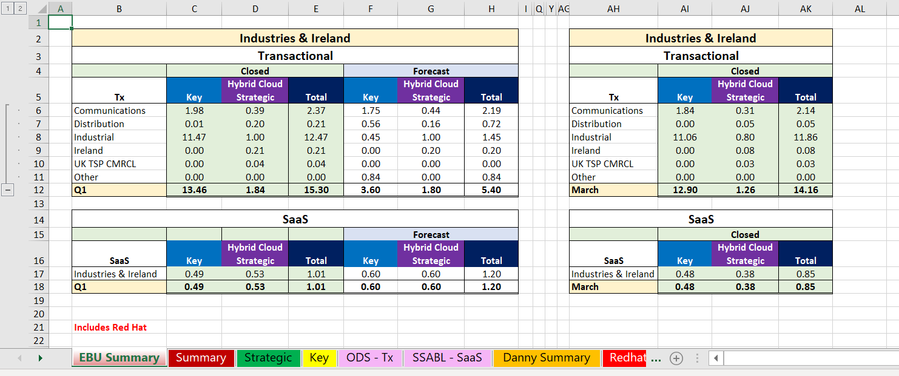

In February 2021, my Task Manager, Karen Barnett, left... I took on the following responsibilities as per the business needs:
- Track daily transactional and SaaS revenues
- Follow up queries and wrong allocations of revenue with WW
- Liaise with Exec, Danny Wilks, about forecasts, budgets and expected revenue
- Communicate forecasts and key deals upline to WW
- Track overall position of the UKI C&C business against budget
